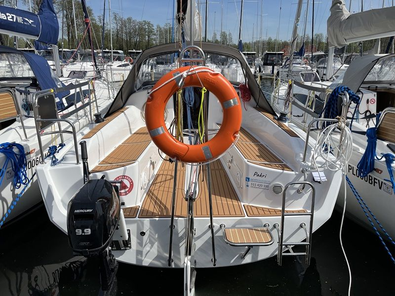

Antila 28.2„Pakri”
- Miejsca
- 8
- Kabiny
- 3
- Zanurzenie
- 0,43 / 1,75 m
- Rok produkcji
- 2024
Długość całkowita8,85 m
Cena od550 zł / doba

Jachty żaglowe · 1 jednostka
od 550 zł / doba
Antila 28.2 to rozwinięcie popularnej serii Antila, zaprojektowane z myślą o większym komforcie i przestrzeni dla załogi. Model łączy dobre właściwości nautyczne z funkcjonalnym układem wnętrza, dlatego często wybierany jest do rodzinnych rejsów oraz czarteru na Mazurach.
Poniżej znajdziesz szczegółowe informacje: Antila 28.2 dane techniczne, wymiary, wnętrze, koje, ilość osób oraz orientacyjną cenę.
Najważniejsze parametry modelu:
Długość całkowita: 9,25 m
Szerokość: 3,07 m
Zanurzenie: 0,43 m (miecz podniesiony) / 1,75 m (miecz opuszczony)
Wysokość w kabinie: ok. 1,86 m
Powierzchnia ożaglowania: 39,6 m²
Silnik: zaburtowy
Typ: jacht kabinowy, turystyczny
Te dane techniczne sprawiają, że jacht Antila 28.2 jest stabilny i bezpieczny, a jednocześnie daje poczucie większej przestrzeni niż modele 26–27 stóp.
Warto zwrócić uwagę na dziobowy ster strumieniowy, który zdecydowanie ułatwia manewry portowe. Antila 28.2 została wyposażona również w kabestan elektryczny do podnoszenia masztu.
Pod względem proporcji Antila 28.2 wymiary plasują ją w segmencie komfortowych jachtów rodzinnych. Szerokość ponad 3 metrów przekłada się na dużą mesę i wygodny kokpit.
Dłuższy kadłub oznacza również:
większą przestrzeń magazynową,
wygodniejsze koje,
więcej miejsca przy stole w mesie.
To model, który wyraźnie czuć jako „krok wyżej” względem Antila 27.
Antila 28.2 wnętrze zaprojektowano z myślą o komforcie kilkudniowego rejsu. Standardowy układ obejmuje:
zamykaną kabinę dziobową
dwie kabiny rufowe
przestronną mesę
kambuz z miejscem do gotowania
oddzielną, zamykaną toaletę
Antila 28.2 środek jest jasny, funkcjonalny i daje odczuwalnie więcej przestrzeni niż mniejsze modele. Wysokość w kabinie umożliwia wygodne poruszanie się większości dorosłych osób.
Częste pytanie brzmi: Antila 28.2 ile osób pomieści?
Standardowo model oferuje do 8 miejsc do spania, w zależności od konfiguracji.
Układ koi:
2 koje w kabinie dziobowej
4 koje w kabinach rufowych
2–4 miejsca w mesie
Komfortowa załoga to 5–6 osób. Przy 8 osobach przestrzeń jest wykorzystana maksymalnie, ale nadal funkcjonalna na tygodniowy rejs.
Antila 28.2 czarter to wybór dla osób, które chcą więcej przestrzeni i wygody niż w modelach 26–27 stóp, ale nadal zależy im na jednostce łatwej w prowadzeniu.
Model dobrze sprawdza się:
na tygodniowe rejsy rodzinne,
przy zmiennych warunkach pogodowych,
na Szlaku Wielkich Jezior Mazurskich.
Cena czarteru uzależniona jest od sezonu, standardu oraz długości rejsu.
W sezonie wysokim stawki czarterowe są wyższe niż w maju, czerwcu czy wrześniu. Pełen cennik jachtów Antila 28.2 dostępnych w naszej flocie znajdziecie tutaj. Kwoty zawarte w cenniku obowiązują przy czarterze tygodniowym. Przy krótszych bądź dłuższych wynajmach ceny zawsze ustalane są indywidualnie. Wracającym klientom zawsze oferujemy atrakcyjne rabaty.
Jeśli zależy Ci na:
większej przestrzeni niż w Antila 27,
wygodnym wnętrzu z zamykanymi kabinami,
jachcie dla 5-8 osób,
stabilnej jednostce turystycznej,
Antila 28.2 będzie bardzo rozsądnym wyborem w segmencie jachtów kabinowych do 10 metrów długości.
Sprawdź, które jachty są wolne, albo zadzwoń do biura.